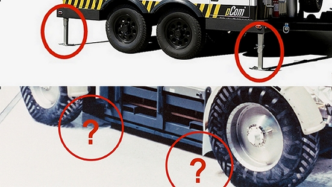
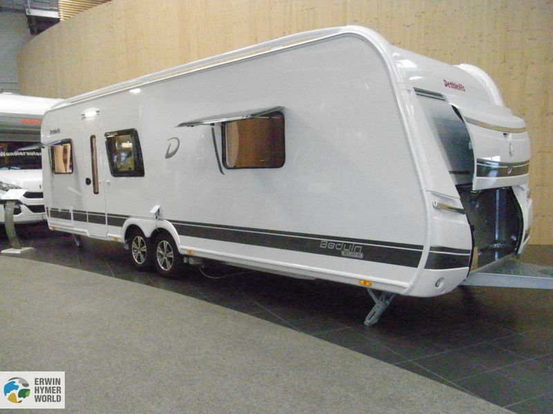
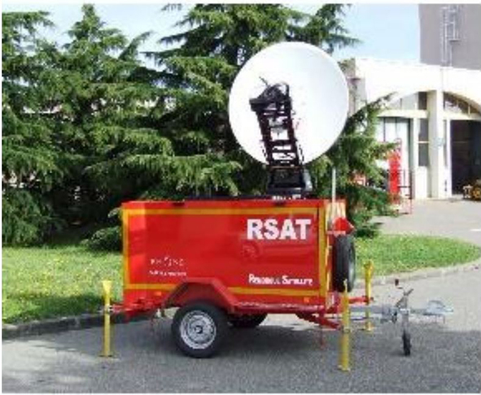
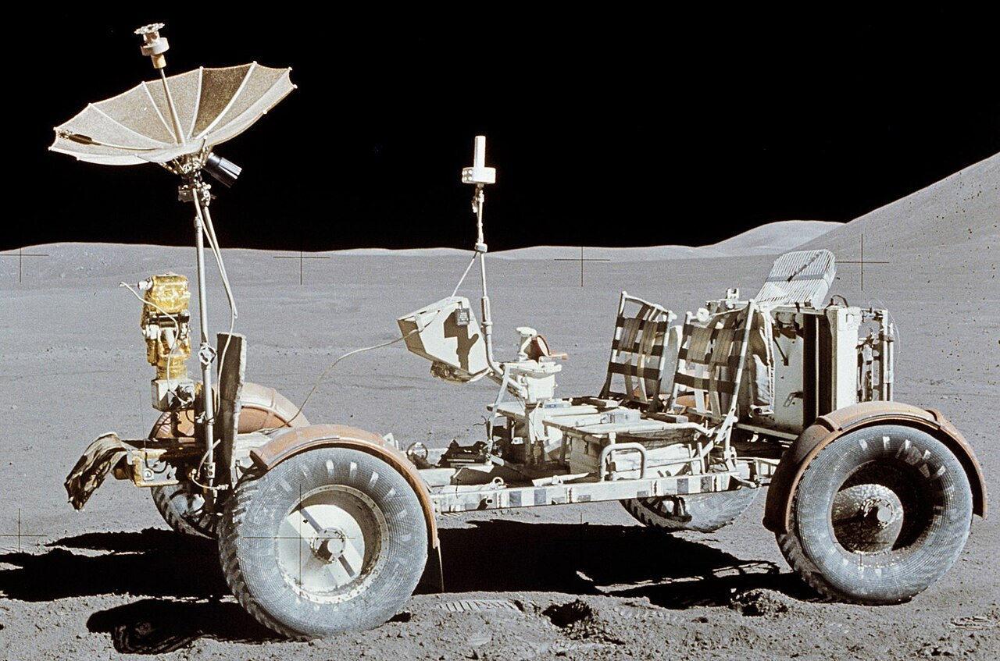
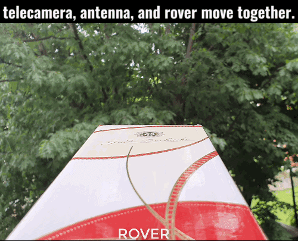
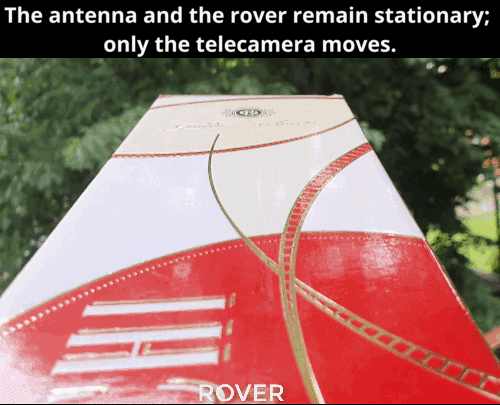
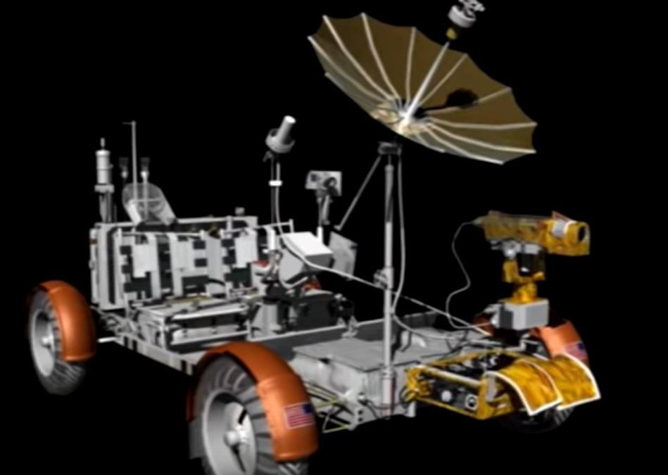
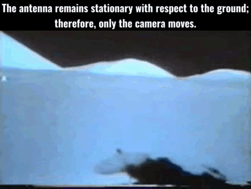
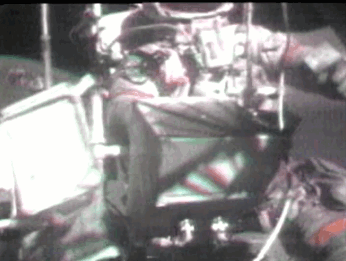

Question no. 15 really makes us doubt the lucidity of the person who asked it and the courage to want to attach the image that accompanies it and that we see here is also surprising.

But can the questioner tell the difference between a vehicle and a trailer? Because the image above is that of a trailer while the one below is of a vehicle, albeit a particular vehicle, used only on the Moon. In trailers (excluding those of trucks that have steering front wheels) regardless of whether they have one or two axles, the wheels must always be placed in the center of the trailer precisely to allow the trailer to steer. These trailers inevitably need feet on the sides and outside the wheels, as if detached from the vehicle towing them they would tilt, and this regardless of whether they are "trailers with transmitting antennas" like the one in the photo, or simple caravans with 4 wheels, as we see in the next photo.

Stabilizing feet are indispensable for the type of trailer with center wheels, not for the presence of antennas.
Second thing: the parking feet should always be placed on the sides of the vehicle and outside the wheels, while, where they were indicated in the image of the rover with question marks, i.e. inside the 4 wheels, they would not have been of any use.
In fact, the transmitting antennas on normal four-wheel side vehicles can safely not mount stabilizing feet to work and maintain aiming, as we see in this composition photo.
To confirm below we see a trailer equipped with television antennas and in fact, being a trailer with central wheels, it must be equipped with feet:

The only exceptions are motorhomes, which can use only two rear stabilizing jacks, but these are used only in the event that there are operators on board who with their movements could disturb the aiming, a movement amplified by the tail of the vehicle very far outside the rear wheels, But even in this case the feet are placed outside the wheels, not internally where the person who asked this absurd question would have liked to put them on the rover.
The lunar rover not being a trailer but a vehicle with four large wheels placed at the extreme points of its perimeter, had absolutely no need of stabilizing feet, especially since on the Moon there is absolutely no wind that can move the antenna dish, which, once pointed, would not have moved a tenth of a degree, also considering that during the connection the astronauts were never on board the rover.

I repeat: an embarrassing question.
All the examples brought by the documentary in which large oscillations of the camera are observed, never frame parts of the rover, but only portions of the lunar landscape. This choice does not allow us to evaluate whether the oscillation is due to the tilting and shock-absorbing support of the camera, or whether it is an oscillation of the entire rover on which the antenna was rigidly fixed, the only condition, the latter, with respect to which the signal connecting with the Earth could have degraded.
Here is an example of how the camera could oscillate on its axis due to shocks given to the rover.

Since there is not a single evidence among the examples brought by the documentary that in addition to the camera the rover also oscillated, the examples of the documentary unfortunately have no evidential value. Now, given the lack of global vision of the problem, a simple concept about relative motion must be explained: if in an oscillating shot the framed parts of the rover do not move, but only the background moves, then it is the whole vehicle that oscillates, including the antenna, as there is a relative movement between the background and the rover.

On the other hand, if the rover is integral with the background and oscillates with it, it means that it is only the camera that oscillates, as there is no relative movement between the background and the rover and therefore the antenna will also remain motionless.

Below we see how firmly the antenna support was attached to the rover, so only oscillations of the whole vehicle would have caused the antenna to oscillate.

Here for confirmation we report an example with the shot in which a part of the rover also appears and where it is unequivocally seen that the oscillation involves only the camera and not the rover, which on the contrary remains integral with the background, therefore without showing relative motion.

Here are some other examples:
A further demonstration that the antenna did not move during the oscillations of the camera we have at this juncture, where (in the photo on the side) you can see the shadow of the antenna anchored to the ground.

Question: Can you find examples where astronauts shake the rover so intensely that it causes a loss of signal? Yes, these examples captured by the rover's camera exist and can be seen in this example where the rover is set in motion and loses point:

All these examples show that the signal did indeed pass through the antenna, but only strong oscillations of the antenna itself could cause it to degrade. On the contrary, oscillations of the camera alone would have been completely irrelevant.
At this point, there are no more doubts: unless it is demonstrated that there are filmed images where the shadow of the antenna oscillates with respect to the ground, or alternatively, the structure of the rover is not integral with the background and moves with respect to it in the frame, we must deduce that the oscillations of the shots shown by the documentary are to be considered exclusively movements of the camera mounted on a tilting and cushioned support, support that amplified and transformed into wide movements all the slight shocks produced by the astronauts in activity around the rover itself.
Chapters: